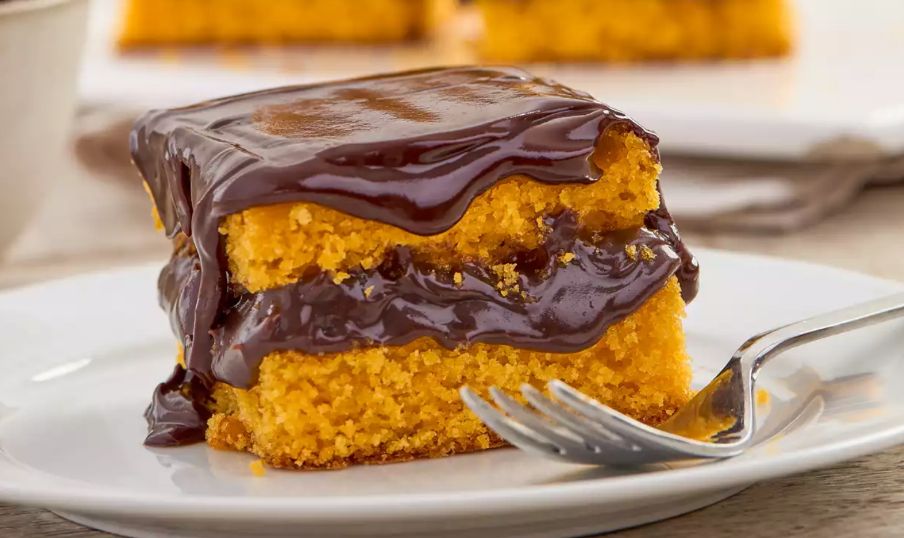

Receita Bolo de Cenoura
Uma receita deliciosa e fácil de fazer! Veja os ingredientes e o passo a passo em baixo:
Ingredientes Bolo:
- 4 Cenouras
- 2 Xícaras de açúcar
- 2 Xícaras de farinha de trigo
- 4 Ovos
- 1/2 Xícara de óleo
- 1 colher de sopa de fermento em pó
Modo de preparo:
- Preaqueça o forno em 180°
- Bata no liquificador a cenoura, os ovos, o óleo e o açúcar
- Em uma tigela, misture a farinha o trigo e o fermeto
- Adicione a mistura líquida á mistura secae mexa até formar uma massa homogênea
- Coloque em uma forma untada e asse por 40 minutos